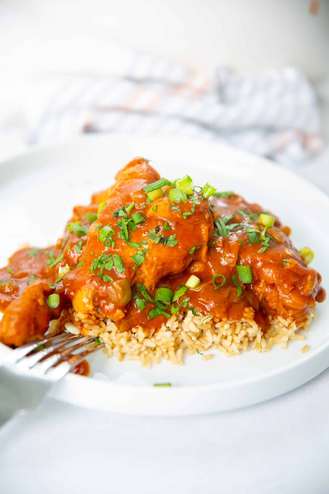

Pulled Chicken Burger

Delicious chicken piquant
Ingredients
- ½ cup all-purpose flour
- 1 (16 ounce) package boneless, skinless chicken breast tenders
- 1 tablespoon olive oil
- 1 (10 ounce) can diced tomatoes with green chile peppers (such as RO*TEL)
- ¼ cup diced sweet pickles
- 2 tablespoons red wine vinegar
- 2 tablespoons drained capers
- 2 garlic cloves, crushed
- ½ teaspoon Creole seasoning (such as Tony Chachere's)
Steps
- Mix flour and Creole seasoning together in a shallow bowl. Dredge chicken through flour mixture, shaking of excess.
- Heat oil in a skillet over medium-heat. Cook chicken in hot oil until browned, about 2 minutes per side. Add diced tomatoes with green chile peppers, pickles, vinegar, capers, and garlic; simmer until chicken is no longer pink in the center, about 10 minutes more. An instant-read thermometer inserted into the center should read at least 165 degrees F (74 degrees C).
Main page